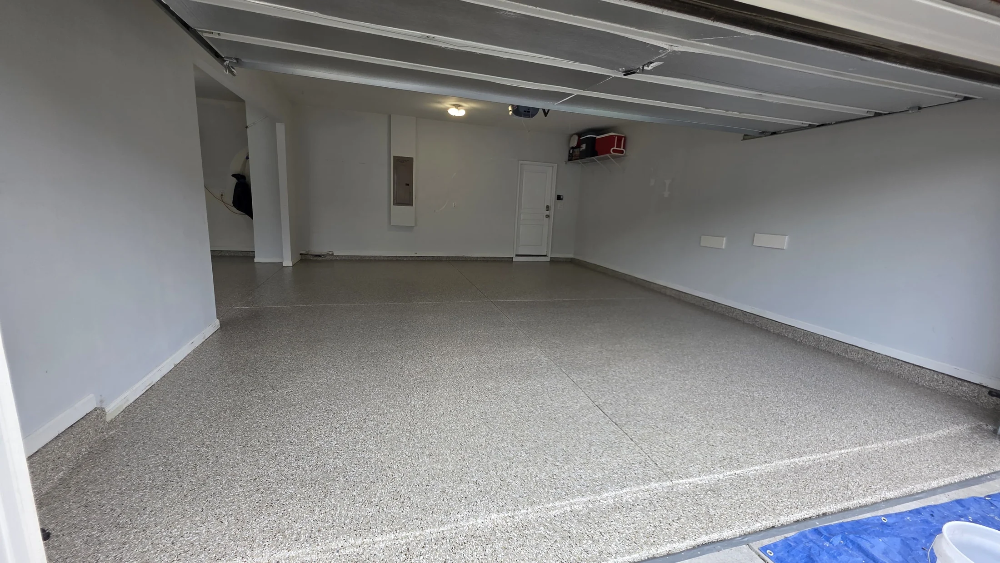
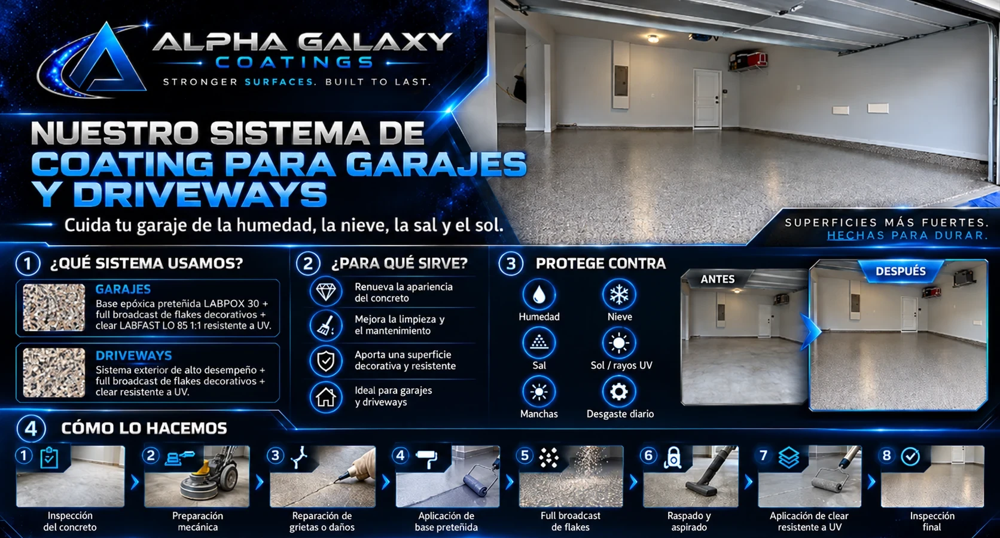
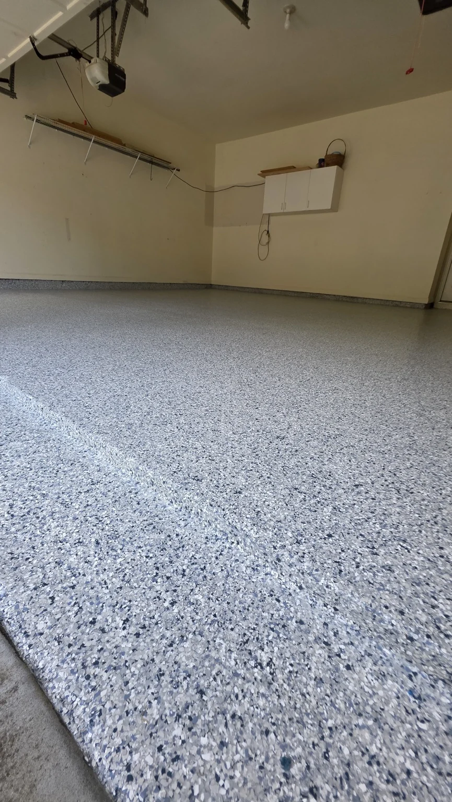
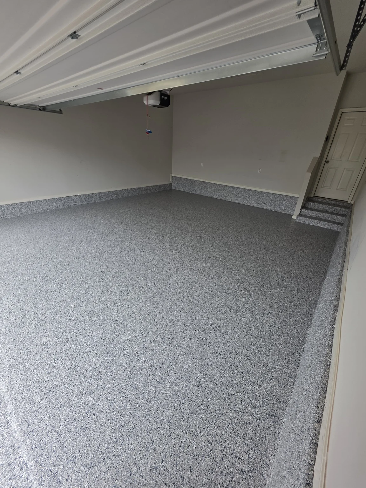
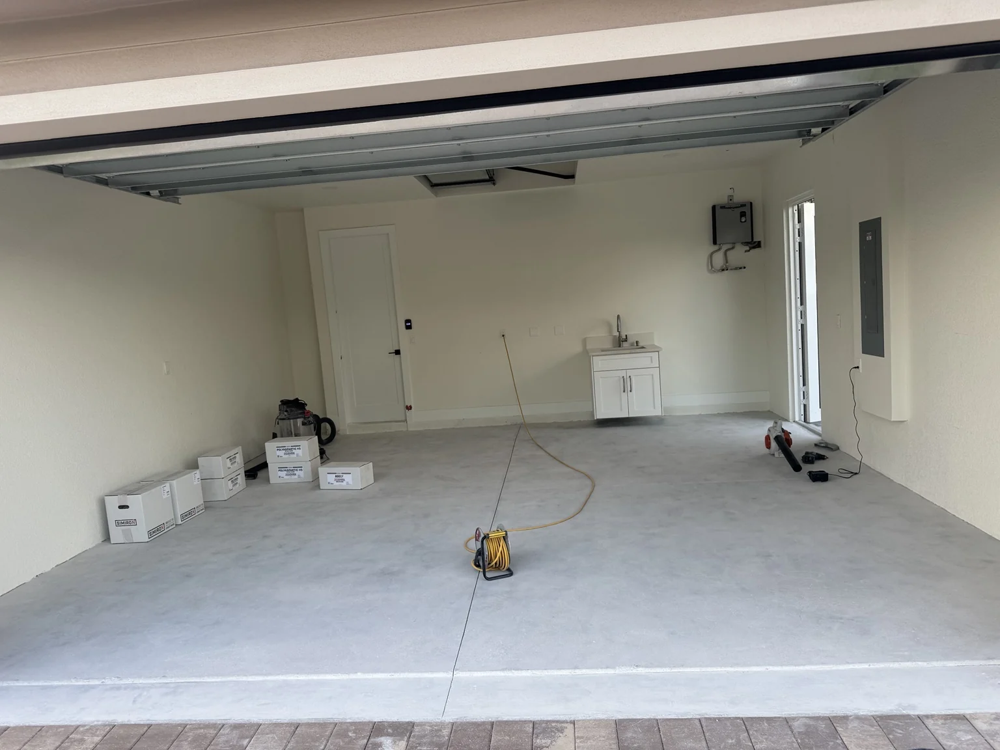
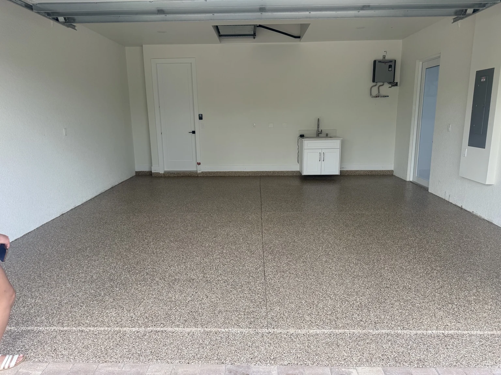
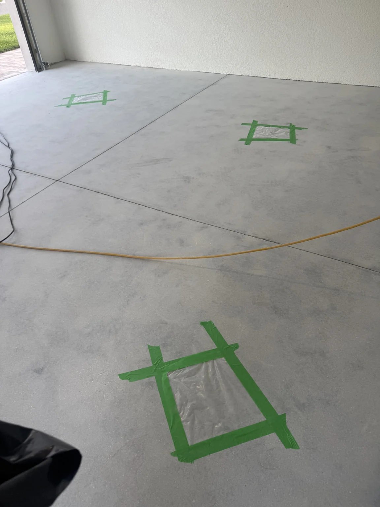

Recubrimientos Premium Hechos para el Clima de Iowa.
Cuida tu garaje de la humedad, la nieve, la sal y el sol. Sistemas duraderos de full-broadcast flakes diseñados para las superficies que usas todos los días.

Superficies más fuertes. Hechas para durar.
Qué Usamos, Para Qué Sirve y Cómo lo Instalamos
Una explicación clara de nuestro sistema actual para garajes y nuestro enfoque para exteriores. Las especificaciones finales dependen del concreto y las condiciones del proyecto.
Sistema de garaje
Nuestro sistema estándar para garajes usa base epóxica LABPOX 30 preteñida de fábrica, full-broadcast de flakes decorativos y LABFAST LO 85 clear polyaspartic 1:1 como capa superior.
Para qué sirve
- Renueva y ayuda a proteger el concreto
- Facilita la limpieza y el mantenimiento
- Aporta un acabado decorativo y duradero
Diseñado para ayudar a proteger contra

Epóxico + Full Flake + Clear Estable a Rayos UV
Nuestro sistema estándar para garajes usa base epóxica LABPOX 30 preteñida de fábrica, full-broadcast de flakes decorativos y LABFAST LO 85 clear polyaspartic 1:1 como capa superior.
Sistema Estándar de Garaje
Mínimo de $1,800 por proyecto.
La Condición del Concreto Importa
Grietas, pitting, daños, humedad y coatings existentes pueden cambiar el alcance y el precio final.
Sistema para Exterior: Sol, Humedad y Temporadas de Iowa
Los driveways usan un sistema apto para exterior con full-broadcast de flakes y clear estable a rayos UV. No usamos la base epóxica del garaje en exteriores.
Rango Preliminar Típico
El precio final se confirma después de inspeccionar el concreto y las condiciones del proyecto.
Diseñado para Exteriores
El sistema se selecciona según exposición exterior, rayos UV y condición de la losa. La química exacta de la base se define antes de instalar.
Elige tu Estilo
Estos son los nombres de blends Torginol disponibles localmente que planeamos ofrecer. Los bloques de color son placeholders hasta añadir muestras oficiales del proveedor y más fotos reales de Alpha Galaxy.
Proyectos Reales. Pisos Reales.
Fotos reales de Alpha Galaxy: antes/después, detalles, preparación y video. No presentamos fotos stock como si fueran trabajos nuestros.





Un Proceso de Instalación Claro
Comienza con un Estimado Preliminar
Esta calculadora funciona completamente en tu navegador. No envía ni almacena información personal. El flujo seguro de ServiceSales AI se conectará solo después de las pruebas finales de producción.
¿Qué pasa después?
Por ahora, esta herramienta solo calcula un precio preliminar localmente en tu dispositivo. Después de conectar ServiceSales AI de forma segura, un formulario separado recopilará únicamente los datos necesarios para darle seguimiento a tu proyecto.
Aviso de precios: Los estimados online son preliminares. El precio final depende de la inspección, condición del concreto, reparaciones, remoción de coating y detalles del proyecto.
Servicios actuales: pisos de garaje y driveways solamente.